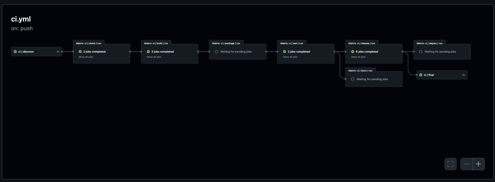

Getting Started
In this tutorial, we will create a sample project that will be automatically validated, built, and published by Catalyst Forge. During this process, we will encounter the various tools and configurations that power Catalyst Forge. By the end of this tutorial, you will be equipped to begin developing your own projects.
We will be building a trivial program in the Python language in order to facilitate learning. Python was chosen due to its simplicity and more well-known nature. Understanding the Python language is not required, and more adventerous learners may choose to substitute the code with their language of choice. Catalyst Forge is language agnostic; all that is required is knowing how to build and validate your language of choice.
Pre-requisites
Note
External contributors will only be able to partially complete this tutorial. This is due to the fact that permissions on most repositories (including the playground) do not allow external contributors to arbitrarily merge code. If you're an external contributor, feel free to follow the tutorial up to the point where merging is required.
Prior to starting this tutorial, please ensure you have the following available on your machine:
Project Setup
To begin, clone the catalyst-forge-playground locally.
Next, copy the examples/python directory to a new directory under users using your GitHub username:
cp -r examples/python users/myusername
The example consists of a simple Python CLI that takes a single argument and prints: "Hello, <arg>! to the screen.
The project was created using the uv CLI.
The Python package has already been configured to install itself as a script named hello.
Creating an Earthfile
Catalyst Forge uses Earthly underneath the hood for creating the CI pipeline. It's recommended you take time to become familiar with Earthly and run through their onboarding documentation. In this tutorial we will create various Earthly "targets" that will be responsible for performing specific steps in the pipeline.
To begin, we will create a simple Earthfile in our folder that will validate our code for us:
VERSION 0.8
uv:
FROM ghcr.io/astral-sh/uv:0.4.12
SAVE ARTIFACT /uv uv
deps:
FROM python:3.12-slim-bookworm
ENV UV_COMPILE_BYTECODE=0
WORKDIR /work
COPY +uv/uv /usr/local/bin/uv
COPY pyproject.toml uv.lock README.md .
RUN uv sync --frozen --no-install-project
src:
FROM +deps
COPY --dir src README.md .
Most of the above targets are there to install uv in the container and initialize the container environment.
The src target will contain all of the code and dependencies we need to run our application.
Checking
Add the following target to the Earthfile:
check:
FROM +src
RUN uv sync --frozen --no-install-project --extra dev
RUN uv run black --check .
RUN uv run ruff check .
The check target is automatically run for us as the first step in the CI pipeline.
It's intended to have a short execution time.
In the above case, we are validating formatting and performing linting, both which tend to execute relatively quickly.
Validate that the check target passes with no issues:
forge run +check
When testing a target locally, it's recommended you use the forge CLI over the native earthly CLI.
During CI runs, the forge CLI is used to execute all Earthly targets.
This ensures more consistency between running the target locally and when running it in CI, as the CLI adds several additional
features that are not natively present in Earthly.
Building
We will build our CLI as a Python wheel to make distributing/publishing it easier.
To do this, add a new build target to the Earthfile:
build:
FROM +src
RUN uv build --wheel
SAVE ARTIFACT dist dist
Like the previous target, the build target is also called by CI.
This ensures that the build can run successfully before calling additional targets that might rely on it (it also caches it).
In the above case, uv will build our wheel and place it in the dist/ folder for us.
We save the entire folder as an artifact for later targets to use.
Testing
For running our tests, we will add a test target to the Earthfile:
test:
FROM +src
COPY --dir tests .
RUN uv sync --frozen --extra dev
RUN uv run pytest .
Like the check target, the test target is also called by CI.
It's intended to be used for running all tests in a project (including unit and integration tests).
Since we're using pytest, we only need to call it for our simple unit test to run.
Containerizing
We will now create our first "release" target. These targets are special in that they each serve different purposes but generally fall into the "release" category. Unlike the other targets, release targets are not required to be a specific name, although it's common to use the same name as the release type.
We will start by creating our docker release target.
As the name suggests, this release type is responsible for building the container that will be published to configured registries.
To do this, add a new docker target to the Earthfile:
docker:
FROM python:3.12-slim
ARG container=hello
ARG tag=latest
WORKDIR /app
COPY +build/dist dist
RUN pip install dist/*.whl
SAVE IMAGE ${container}:${tag}
This target copies the wheel from the build target and then globally installs it into the container.
Since we've configured a script entry in our pyproject.toml, the CLI can be run by executing hello.
The CI will automatically pass in the container and tag arguments in order to set the container name.
These arguments are not optional and must be included in all docker release targets.
Let's now build our image and make sure it works:
$ forge run +docker
$ docker run hello:latest test
Hello, test!
Unlike the other targets, all release targets are run in parallel in a single step of the CI pipeline. The release targets are generally run towards the end of the CI pipeline after all projects have been built and validated. We will configure the specifics of this release target in a later step.
Releasing
The second release target, and our final target in the tutorial, will be the github target.
This release type is responsible for building and uploading artifacts from our project into a new GitHub release.
Like the previous release type, we will add a github target to the Earthfile:
github:
FROM scratch
COPY +build/dist dist
SAVE ARTIFACT dist/* hello.whl
This release type expects artifacts to be produced by the target. All artifacts are archived, compressed, and uploaded as assets when a new release is created.
In this case, we output our Python wheel as an artifact, which is itself a sort of archive. You can validate this behavior by running the following:
$ forge run --artifact out +release
$ unzip -l out/linux/amd64/dist
Archive: out/linux/amd64/dist
Length Date Time Name
--------- ---------- ----- ----
0 02-02-2020 00:00 hello/__init__.py
241 02-02-2020 00:00 hello/hello.py
288 02-02-2020 00:00 hello-0.1.0.dist-info/METADATA
87 02-02-2020 00:00 hello-0.1.0.dist-info/WHEEL
42 02-02-2020 00:00 hello-0.1.0.dist-info/entry_points.txt
433 02-02-2020 00:00 hello-0.1.0.dist-info/RECORD
--------- -------
1091 6 files
Depending on your local architecture, the path to the artifact may be different.
Adding a Blueprint
Catalyst Forge uses blueprint files in order to both identify projects within a repository as well as configure them.
Add a new file in the root of the project folder called blueprint.cue with the following contents:
version: "1.0.0"
project: {
name: "hello-jmgilman" // Replace "jmgilman" with your GitHub username
}
A blueprint file in a directory signifies that it is a project within a repository.
Many of the Catalyst automation systems interact with projects inside of a repository and use the existence of this file to
distinguish them.
For example, without this file, our Earthfile would be ignored by the CI system and none of our targets would run in the pipeline.
The only required field in a blueprint file is the project name (shown as hello-jmgilman above).
This name should be unique across all repositories and is used to distinguish the project in several area (i.e. the container name).
There are many more useful fields exposed in a blueprint file that can be explored later in the documentation.
Configuring Releases
The last step before pushing our code is to configure our releases in the blueprint file.
version: "1.0.0"
project: {
name: "hello-jmgilman"
release: {
docker: {
on: {
merge: {}
tag: {}
}
config: {
tag: _ @forge(name="GIT_COMMIT_HASH")
}
}
github: {
on: tag: {}
config: {
name: string | *"dev" @forge(name="GIT_TAG")
prefix: project.name
token: {
provider: "env"
path: "GITHUB_TOKEN"
}
}
}
}
}
We've configured two releases: docker and github.
The "type" of the release is the same as the name.
Each release has an on field that specifies when the release is run and a config field that specifies type-specific options for
the release.
To learn more about releases, see the appropriate section in the documentation.
Testing Locally
Prior to pushing our changes in a PR, let's test the full CI pipeline locally:
forge ci --local .
The . parameter is important as it will scope the CI run to only our project.
If everything is working correctly, all targets should be run in the correct order and pass with a green checkmark.
We've now built our sample application, validated and tested it, and even have potential publish and release artifacts for it.
Submiting to CI
Note
The CI system in the playground is not connected to any remote build servers for security reasons. As a result, builds will not be cached and will start from scratch each time.
Now that we've validated everything locally, we will push our changes to a new branch and open up a PR. After opening the PR, you should see a new GitHub Action workflow start.

Examining the workflow, you can see that it follows the same steps as was shown in our local run. The only difference is that all projects within the repository are being run in parallel. If any of these projects fail, the entire pipeline will fail. This is intentional, as all projects should be successfully building before merging a PR to the default branch.
Releasing and Publishing
Note
The steps below require permissions to merge and tag the playground repository. If you don't have these permissions, you may still read on for educational purposes. Alternatively, you may seek someone out with the necesary permissions to help you (feel free to open an issue!).
Once the PR has successfully passed CI, proceed with merging it to the default branch (please use squash merges). After the merge, a new GitHub Workflow will run for this particular commit. Allow the workflow to run to completion before proceeding.
Once the workflow has completed, you'll notice a new package created for the GitHub Container Registry.
The package will have the same name as the one defined in project.name and, as we configured, will have a tag created that
matches the commit hash of the merge commit.
Since we configured the docker release to run on merge events (which defaults to merges to the main branch), it automatically
ran and published our container image.
For the final step, we will tag the repository with an application specific tag:
git tag -a "hello-jmgilman/v1.0.0" -m "My first version"
git push origin master
The convention used above is important: <project_name>/<version>.
By default, the tag event used in our github release type only triggers when a tag matching the project name is pushed.
This ensures that projects are all versioned separately in the repository.
After creating and pushing this tag, a new workflow is created and the CI pipeline runs again.
Allow the new workflow to run to completion before proceeding.
Once the workflow is completed, you'll notice that a new release is created on GitHub with the name set to our git tag (this is
what we configured the name to earlier).
The release will contain a single artifact which is the Python wheel created by our github release.
Notice that no other projects had a release added.
Conclusion
That's it for this getting started tutorial. You now understand the fundamentals of creating and managing projects using Catalyst Forge!